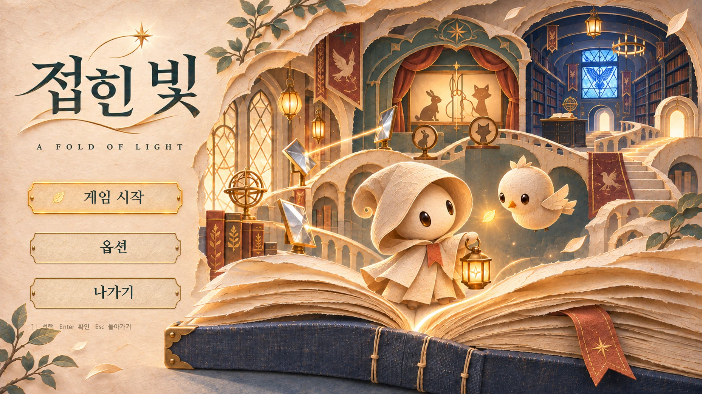
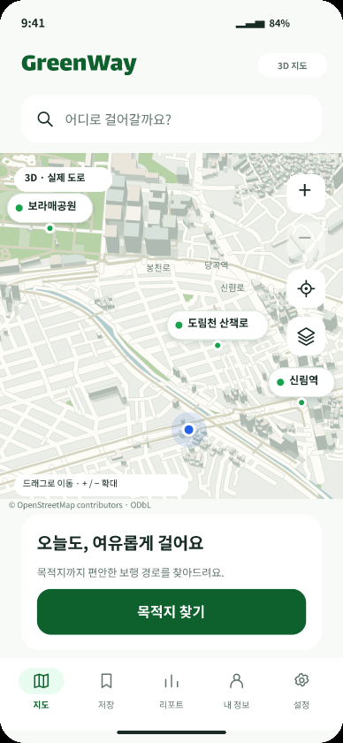

학력
유한대학교 컴퓨터공학과게임콘텐츠전공
2022.03 입학 · 2027.02 졸업 예정남강고등학교2019.03 — 2022.02 · 졸업
이도언GAME QA PORTFOLIO
여러 팀 프로젝트와 1인 개발 프로젝트에서
기획·구현·테스트를 함께 경험한 이도언입니다.
어떤 일이 있어도 이성적인 판단을 하고,
주변 팀원들에게 긍정적인 에너지를 줍니다.
기획한 규칙이 실제 플레이에서도 지켜지는지 살피고,
진행·보상 오류를 보고한 뒤 연결된 흐름까지 재검증합니다.
게임콘텐츠전공
2022.03 입학 · 2027.02 졸업 예정유한대학교 · 4인 팀 · 구상·발표 참여
2025.12.30학과 행사 기획·운영
2026.03 — 2026.12 예정적·아군 식별 문제 직접 피드백
이후 패치에 반영
Coursera · Google
2026.05.30 · 수료 · 수료증 ↗실무에 바로 쓰는 AI 활용 실습
유한대학교 · 2025.10 — 12 · 수료Anaconda 환경에서 버튼 탐지·클릭과 OCR 재화 비교 자동화.
기획·구현 경험으로 입력, 상태 전환, 보상 조건 확인.
테스트 기록·변경 이력 확인. Jira로 버그·개선사항 간단 정리.
다양한 장르에서 쌓은 플레이 경험을 달성 기록과 시간으로 정리했습니다.
랭킹·티어·레벨·클리어 기록을 먼저 보여줍니다. PC와 모바일을 나누고, 장르별로 펼쳐 볼 수 있습니다.
PC 게임 77개 · 모바일 게임 13개
Steam 및 기타 PC 플랫폼 · 모바일 플레이 기록
장르를 눌러 펼치기 · 랭킹·티어·달성 기록 우선
Steam · 기타 PC 플랫폼
| 게임 | 달성 기록 · 시간 |
|---|---|
| 로스트아크 | 아브렐슈드까지 콘텐츠 경험 |
| 아이온2 | 기룡 장비 · 엔드 콘텐츠 경험 |
| 명일방주: 엔드필드 | 스토리 완료 |
| 팰월드 | 모든 작업 해금69시간 41분 |
| ARK: Survival Evolved | 모든 도전과제 완료58시간 49분 |
| The Forest | 엔딩 완료29시간 8분 |
| 이환 | 40시간 이상 |
| Once Human | 31시간 8분 |
| Hand Simulator: Survival | 13시간 6분 |
| Subnautica 2 | 11시간 |
| Don't Starve Together | 8시간 31분 |
| Limbus Company | 8시간 18분 |
| Terraria | 7시간 50분 |
| 게임 | 달성 기록 · 시간 |
|---|---|
| Lethal Company | 17시간 28분 |
| R.E.P.O. | 16시간 36분 |
| Deceit | 10시간 17분 |
| Machine Party | 9시간 53분 |
| 게임 | 달성 기록 · 시간 |
|---|---|
| 오버워치 | 시즌 1 마스터 · 상위 1%Steam 85시간 27분 |
| 서든어택 | 특무대장 |
| 케로로팡팡 | 랭킹 50위권 · 상위 0.05% |
| 크레이지아케이드 | 레벨 400 |
| 레드 데드 리뎀션 2 | 비버 동굴까지 진행47시간 18분 |
| Nine Sols | 엔딩 완료21시간 9분 |
| PUBG: 배틀그라운드 | 1,223시간 27분 |
| GTA V — Rockstar | 602.6시간 |
| Talented | 31시간 50분 |
| Black Squad | 25시간 10분 |
| Arma 3 | 20시간 18분 |
| PUBG: Test Server | 17시간 33분 |
| Vampire Survivors | 16시간 31분 |
| 던그리드 | 13시간 5분 |
| PEAK | 12시간 39분 |
| Chippy | 12시간 34분 |
| Super Bunny Man | 10시간 57분 |
| MECCHA CHAMELEON | 10시간 30분 |
| Hollow Knight | 9시간 40분 |
| Wizard of Legend | 9시간 3분 |
| Overcooked! 2 | 9시간 1분 |
| Left 4 Dead 2 | 8시간 22분 |
| 철권 7 | 8시간 17분 |
| One-armed robber | 8시간 12분 |
| Ghostrunner Demo | 8시간 11분체험판 |
| 3D Aim Trainer | 8시간 10분 |
| My Little Universe | 7시간 51분 |
| The Binding of Isaac | 시간 기록 미확인 |
| 게임 | 달성 기록 · 시간 |
|---|---|
| 카트라이더 | 무지개 금메달 · 당시 최고 레벨 |
| 테일즈런너 | 프라우드윙 · 당시 상위 0.1% |
| 피파 온라인 3 | 월드클래스 |
| Golf With Your Friends | 8시간 54분 |
| 게임 | 달성 기록 · 시간 |
|---|---|
| 리그 오브 레전드 | 마스터 · 상위 0.5% |
| 전략적 팀 전투(롤토체스) | 마스터 |
| Slay the Spire 2 | 초월 1088시간 23분 |
| Schedule I | 스토리 엔딩 완료15시간 7분 |
| Outhold | 엔딩 완료10시간 56분 |
| House Flipper 2 | 36시간 57분 |
| Tabletop Simulator | 19시간 41분 |
| 이터널 리턴 | 13시간 35분 |
| Rock Island | 13시간 24분 |
| Monsters are Coming! | 11시간 54분 |
| Schedule I: Free Sample | 11시간체험판 |
| Buckshot Roulette | 10시간 14분 |
| Supermarket Together | 9시간 |
| Stacklands | 8시간 |
| Graveyard Keeper | 시간 기록 미확인 |
| 게임 | 달성 기록 · 시간 |
|---|---|
| A Dance of Fire and Ice | 전체 스테이지 클리어69시간 38분 |
| 로블록스 | 70시간 이상 |
| Pixel Sketch | 21시간 34분 |
| Human Fall Flat | 19시간 18분 |
| Goose Goose Duck | 15시간 52분 |
| Coloring Pixels | 12시간 36분 |
| The Past Within | 11시간 39분 |
| Puzzle Together | 10시간 6분 |
| Liar Game | 9시간 2분 |
| 가리사니 흥신소 | 8시간 33분 |
| Escape Simulator | 8시간 32분 |
| Among Us | 8시간 31분 |
| PICO PARK | 7시간 54분 |
플레이 기간 · 성장 · 달성 기록
| 게임 | 달성 기록 · 시간 |
|---|---|
| 메이플키우기 | 전투력 7억 |
| 쿠키런: 킹덤 | 왕국 레벨 80 |
| 게임 | 달성 기록 · 시간 |
|---|---|
| 템플런 | 모든 업적 완료 |
| 쿠키런 | 1억 점 이상 |
| 탕탕특공대 | 챕터 100 |
| 브롤스타즈 | 50시간 이상 |
| 게임 | 달성 기록 · 시간 |
|---|---|
| 카트라이더 러쉬플러스(카러플) | 챌린저 3 |
| 게임 | 달성 기록 · 시간 |
|---|---|
| 클래시 로얄 | 트로피 3,000+ · 당시 최고 아레나 |
| 클래시 오브 클랜 | 타운홀 14 · 당시 상위 0.1% |
| 포켓몬 카드 게임 | 크라운 카드 5장 |
| 랜덤다이스1 | 4,000점 |
| 게임 | 달성 기록 · 시간 |
|---|---|
| 바운스볼 | 전체 스테이지 클리어 |
| 모두의마블 | 2년간 플레이 |
1인 개발에서 익힌 기획·구현 경험으로 테스트 조건을 찾습니다.
기획한 규칙과 실제 동작을 연결해 보고, 진행 차단·재화 손실·저장 오류를 우선 확인합니다. 이미지로 게임을 살펴보고, 핵심 테스트와 결과를 확인할 수 있습니다.
1인 개발·제작 5개 · 팀 프로젝트 4개
아래 9개 기준 · 1인: 게임 3개 + 보드게임 1개 + Figma 프로토타입 1개
2026.11.10 기준 보고서 · 2026.11.06 실행 회차 집계 · 6개 프로젝트 / 설계 45건 / 실행 28건 / 통과 27건 / 실패 1건 / 미실행 17건. 게임 DLL 로직 20건·STILLDRAWN WebGL UI 3건·GreenWay Figma UI 5건의 합계입니다. 특정 조건의 실행 결과이며 전체 게임의 품질 통과율은 아닙니다.

한 번의 방향 입력으로 친구들을 함께 움직여 같은 색의 목표에 도착시키는 중력 퍼즐입니다.
QA · 되돌리기·초기화·완료 판정되돌리기·완료 로직과 첫 단계의 보상·저장 흐름 확인
모든 블록을 함께 움직여 같은 색의 목표에 도착하는 중력 퍼즐.
1인 개발 · 기획·구현·테스트·itch.io 공개
실제 입력·로직 검사 / 전체 스테이지·기기 비교 제외
전체 QA 엑셀 ↓


2026.11.06 · 11.10 · 화면을 누르면 확대됩니다.
이동 후 되돌리기
기대: 위치·횟수 복원
확인: 시작 위치·0회
크기 2에서 초기화
기대: 시작 크기·위치
확인: 크기 1·이동 0회
정지 중 방향 입력
기대: 이동 요청 거절
확인: 이동 횟수 0
기준 화면과 검사 결과 요약입니다. 전체 조건·관찰값은 다운로드 기록에서 확인할 수 있습니다.

덱을 편성한 뒤 유닛을 소환하고 강화해 웨이브와 보스를 상대하는 게임입니다.
QA · 재화 차감·종료 보상 회귀보상 오류 보고·재검증 · 음수 비용은 수정 후보 검증, 출시 반영 대기
유닛을 소환·강화해 웨이브와 보스를 막는 디펜스 게임.
4인 팀 · 시스템 기획·출시 대응·결함 보고·재검증
 진주도둑들유닛을 소환하고 강화해 웨이브와 보스를 막는 디펜스 게임STOVE에서 게임 보기
진주도둑들유닛을 소환하고 강화해 웨이브와 보스를 막는 디펜스 게임STOVE에서 게임 보기 음수 비용 수정 후보 검증 / 출시 반영 확인 대기
전체 QA 엑셀 ↓수정 전 b71d2db → 수정 후 2cc97a7 ↗2026.06.10 보상 판별 수정 이력 · 240e2652026.06.16 미네랄 지급 수정 이력 · 2cc97a72026.06.15 중도 이탈 보상 처리 수정 이력 · 5b6ad8f


직접 확인 2025.09.17 · 후속 검사 2026.11.06·10 · 화면을 누르면 확대됩니다.
15골드에서 15 차감
기대: 구매 승인·잔액 0
확인: 15 → 0
0골드에서 15 차감
기대: 구매 거절·잔액 유지
확인: 거절·0 유지
비용 -5를 직접 입력
원본: 골드 0 → 5
후보: 거절·0 유지
기준 화면과 검사 결과 요약입니다. 전체 조건·관찰값은 다운로드 기록에서 확인할 수 있습니다.

제한된 하루 동안 지하에서 수집한 쓰레기를 분류해 수익을 만들고, 다음 탐색을 준비하는 게임입니다.
QA · 분류 보상·대기열 정합성중복 보상·시간초과·대기열 경계 로직 확인 · 화면 흐름 미실행
지하에서 쓰레기를 모으고 분류 수익으로 다음 탐험을 준비하는 게임.
4인 팀 · 콘셉트·경제 구조 기획·시스템 구현
로직 검사 / 인벤토리·강화 화면 절차 미실행
전체 QA 엑셀 ↓


2026.11.06 · 화면을 누르면 확대됩니다.
정답 직후 다시 제출
기대: 중복 제출 거절
확인: 보상 1회·11개 남음
2.01초 경과 처리
기대: 추가 보상 없음
확인: 오염도 2·보상 유지
한도 30개에 31개 요청
기대: 초과 수용 차단
확인: 30개만 수용
기준 화면과 검사 결과 요약입니다. 전체 조건·관찰값은 다운로드 기록에서 확인할 수 있습니다.

전진하는 전장에서 적을 막고 포탑과 증강을 선택해 전투 구성을 바꾸는 디펜스 게임입니다.
QA · 동력 경계값·전투 상태 보존동력 하한·상한·회복 임계값 확인 · 전투·저장 화면 흐름 미실행
포탑과 증강을 선택하며 전진하는 전장을 돌파하는 디펜스 게임.
3인 팀 · 포탑 성장·증강·전투 시스템 기획
로직 검사 / 보스 영상은 소개 자료, 전투 화면 절차 미실행
전체 QA 엑셀 ↓


2026.11.06 · 화면을 누르면 확대됩니다.
최대 100·동력 -2 입력
기대: 하한 0으로 보정
확인: 0·회복 상태
임계값 60·입력 59/60
기대: 60부터 준비 상태
확인: 회복 → 준비
최대 100·동력 110 입력
기대: 상한 100으로 보정
확인: 100·준비 상태
기준 화면과 검사 결과 요약입니다. 전체 조건·관찰값은 다운로드 기록에서 확인할 수 있습니다.

종이 세계를 탐색하고, 새 능력을 얻어 이전에 갈 수 없던 구역으로 돌아가는 메트로배니아입니다.
QA · 능력 해금·지도 입력 분리능력 해금·지도 포커스 확인 · 전체 진행 경로 추가 검증 필요
새 능력을 얻고 이전 지역을 다시 탐색하는 종이 세계 메트로배니아.
1인 개발 중 · 맵·능력 게이트 구현과 테스트
로직·WebGL 검사 / 전체 대시 통로·저장 복원 미검증
전체 QA 엑셀 ↓


직접 확인 2026.10.30 · 실행 기록 2026.11.06 · 화면을 누르면 확대됩니다.
47번 보스만 격파 기록
기대: 대시만 해금
확인: 패링은 잠김 유지
지도에서 내 위치 클릭
기대: 플레이어 위치 유지
확인: 지도만 1 → 3배
지도를 닫고 다시 열기
기대: 정지·확대 상태 복원
확인: 재정지·3배 유지
기준 화면과 검사 결과 요약입니다. 전체 조건·관찰값은 다운로드 기록에서 확인할 수 있습니다.

빛을 반사하고 종이 오림의 그림자를 맞추며, 기억등으로 빛을 옮겨 책 속 공간과 기억을 복원하는 3D 퍼즐입니다.
QA · 광로·그림자·기억등의 진행 조건충돌체 수정·조작 회귀·실패 후 복구 검증 · QA 실행 보고서
빛의 경로·그림자의 윤곽·기억등의 상태로 책 속 공간의 길을 여는 퍼즐.
3인 팀 · 공간·퍼즐 진행 구조 기획
가상 입력·물리 접촉·API 검사 / 전체 수동 플레이·성능 제외
전체 QA 엑셀 ↓방·카메라를 준비한 API 시연
2026.11.13 · 화면을 누르면 확대됩니다.
광로 연결 후 걸쇠 조작
기대: 조작 후 출구 열림
확인: 연결·문 열림 분리
조기 방출 후 재충전
기대: 출구까지 진행 가능
확인: 복구 후 출구 완료
귀·꼬리 뒤집기 비교
수정 전: 충돌체 경고
수정 후: 해당 경고 없음
정방향·반전 조각에 이동
기대: 대상 충돌 콜백
확인: 양쪽 상태 접촉
기준 화면과 검사 결과 요약입니다. 전체 조건·관찰값은 다운로드 기록에서 확인할 수 있습니다.

주사위로 보드를 이동하며 코인과 땅을 관리하는 실물 보드게임입니다.
QA · 턴 규칙·자원·종료 조건턴·자원·종료 조건 테스트 설계 · 실행 결과 미기록
주사위로 이동하며 코인과 땅을 모으는 실물 보드게임.
1인 제작 · 턴 규칙·보드·룰북·구성품 설계
테스트 설계 / 실물 플레이 결과 미기록

설계안 · 미실행 · 화면을 누르면 확대됩니다.
4인 시작 자원 배분
기대: 각자 80코인
기대: 색 주사위 20개
일반 칸·흰 칸 비교
기대: 흰 칸만 순간이동
기대: 목적지의 말 1개
9턴·10턴 종료 비교
기대: 9턴은 계속 진행
기대: 10턴 소유 수 판정
기준 화면과 검사 결과 요약입니다. 전체 조건·관찰값은 다운로드 기록에서 확인할 수 있습니다.

신호가 적은 보행 경로를 찾고, 길안내 시작부터 도착·이동 기록 확인까지 연결한 모바일 서비스 Figma 프로토타입입니다.
QA · 동의·경로·설정의 상태 변화 검증약관 펼침 시 동의 버튼 잘림 발견 · 실제 화면과 케이스별 결과 공개
목적지 탐색부터 보행 안내·도착 확인까지 연결한 Figma 프로토타입.
단독 기획 · 사용자 흐름·Figma 프로토타입 제작
Figma 실제 입력 / SNS 인증·GPS·영구 저장 제외
전체 QA 엑셀 ↓Figma 실제 조작 · 거리·시간은 예시
2026.11.12 · 화면을 누르면 확대됩니다.
필수 항목 하나만 동의
기대: 지도 진입 차단
확인: 동의 화면 유지
필수 동의 후 약관 펼침
기대: 버튼 전체 표시
관찰: 동의 버튼 잘림
안내 중 도착 확인 클릭
기대: 도착 화면 연결
확인: 도착·리포트 버튼
설정 변경 후 탭 재진입
기대: 같은 세션 값 유지
확인: 토글 상태 유지
기준 화면과 검사 결과 요약입니다. 전체 조건·관찰값은 다운로드 기록에서 확인할 수 있습니다.

내가 접은 종이의 형상이 비행 성능으로 이어지는 게임입니다. 3D 접기·비행·98개 연구 노드를 연결하고, 형상 복원과 성장 데이터의 정합성을 검증합니다.
QA · 형상 복원·비행 정산·연구 구매접기 복원·구매·저장 복구 검사 · 마우스 접기 전체 흐름 추가 검증 필요
직접 접은 기체로 비행하고, 착륙 보상을 연구에 투자하는 게임.
1인 개발 중 · 접기·비행·연구 시스템 구현과 테스트
메서드·Windows 빌드 검사 / 자유 접기·체감 밸런스 제외
전체 QA 엑셀 ↓2026.11.10 · 화면을 누르면 확대됩니다.
접기 후 되돌리기·재생
기대: 면적·형상 복원
확인: 층·기록 재생 통과
15도·3m에서 발사
기대: 착륙 후 보상 정산
확인: 연구점 18 지급
218점·비용 30 구매
기대: 재구매 차감 없음
확인: 188점 유지
기준 화면과 검사 결과 요약입니다. 전체 조건·관찰값은 다운로드 기록에서 확인할 수 있습니다.
메이플키우기 자동화는 반복 성장과 재화 소모를 확인하기 위한 3인 팀 프로젝트입니다. Anaconda 환경에서 버튼 탐지·클릭·OCR 재화 비교와 예외 처리를 맡았습니다. 보관한 시연 영상에서 실행 흐름을 확인할 수 있습니다.
반복 클릭을, 검증 가능한 실행 흐름으로.

강화의 성공과, 테스트의 성공을 구분합니다.

클릭이 됐는지보다, 얼마가 차감됐는지.

예상 밖의 화면에서도, 원인을 남깁니다.

시작 상태와 입력 조건을 맞춰 기대 결과와 실제 결과를 다시 대조했습니다. 수정한 기능과 연결된 보상·저장·재접속 흐름을 확인하고, 검증한 범위와 남은 항목을 구분해 기록했습니다.
보상 오류를 문서로 전달한 뒤 중도 이탈·클리어·패배의 지급 결과를 비교했습니다. 후속 검사에서는 과거 소스를 다시 빌드해 패배 보상 수정 전후를 대조했습니다. 별도의 음수 비용 수정 후보는 경계 조건을 확인했으며, 출시 반영은 확인 대기입니다.
담당 범위와 수정 근거 보기 ↗새 저장 상태에서 키보드·버튼으로 클리어, 일시정지, 되돌리기 흐름을 다시 확인했습니다. 재클리어 시 보상이 중복 지급되지 않는지, 재접속 후에도 진행 기록과 보유 재화가 유지되는지 저장값과 화면을 대조했습니다.
화면·관찰값·실행 스크립트 보기 ↗연구 가격·구매 조건과 저장 실패·복원, 접기 동작을 조건별로 다시 검사했습니다. 같은 조건으로 재실행한 결과를 대조하고, 검증 대상 소스와 실행 로그를 함께 남겨 어떤 상태에서 확인한 결과인지 추적할 수 있게 했습니다.
직접 수행 · 결함 발견 / 문서 보고 / 수정 후 재검증
| 종료 상황 | 확인 결과 |
|---|---|
| 중도 이탈 | 획득 재화 미지급 |
| 정상 클리어 | 획득 재화 지급 |
| 패배 | 획득 재화 지급 |
개발 당시 수행 경험입니다. GitHub 수정 이력과 담당 역할을 함께 제시하며, 당시 원본 배포 파일과 반복 기록은 보관되어 있지 않습니다. 11월 10일에 과거 소스를 다시 빌드한 패배 보상 비교 결과는 프로젝트 상세에 별도로 기록했습니다.
직접 만들며 익힌 [규칙과 구조]를 바탕으로, // [기획·구현·플레이] 관점에서 조건을 찾고, // [위험한 흐름부터] 꼼꼼히 검증합니다.
메이플키우기 자동화 경험을 바탕으로 정상·경계·예외 조건을 나눈 후속 테스트 설계입니다.
항목을 펼치면 사전 조건·절차·기대 결과·수집할 증거를 볼 수 있습니다.
8개 테스트 설계
이 판정 기준은 후속 자동화 검증을 위한 설계안입니다. 임계값·대기 시간은 설계용 조건이며 기존 도구의 설정값을 뜻하지 않습니다. 실행 전 게임 버전·해상도·대상 영역·비용을 기록하고, 실행 후에만 PASS·FAIL을 부여합니다.
OCR 판독 실패나 버튼 오탐은 재화 결함으로 확정하지 않습니다. 원본 화면·판독값·탐지 위치를 비교한 뒤, 같은 조건을 수동으로 확인하는 후속 절차를 설계했습니다.
진행 불가·재화 손실·중복 지급처럼 플레이에 직접 영향을 주는 조건을 먼저 확인합니다. 저장 복원·재접속·호환성·결제 흐름은 환경과 판정 근거를 확보한 후 별도로 실행할 범위입니다.
플레이 흐름과 데이터 변경을 함께 읽습니다. 진행 불가·재화 손실·중복 지급 위험을 먼저 고르고, 정상·부족·중복·중단 조건의 기대값을 나눕니다.
Rushitadel은 동력 임계값의 직전·동일·초과를, 데굴데굴은 이동·되돌리기·초기화를 나눴습니다. 사전 상태와 입력 순서, 수치로 비교할 기대값을 기록합니다.
쓰레기 집게 소년은 대기열·보상 호출 수를, FlyEditor는 잔액과 소유 상태를 비교했습니다. 진주도둑들 보상 문제는 문서나 스프레드시트로 전달했습니다. OCR 실패는 게임 결함과 구분합니다.
수정한 조건과 연결된 흐름을 함께 확인합니다. 진주도둑들에서는 중도 이탈 미지급과 클리어·패배 지급을 비교했습니다. 미실행 항목과 남은 위험은 결과에 함께 표시합니다.